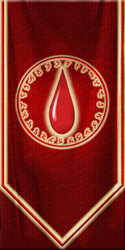

Buadren is a small, community-run Asheron's Call server. Full retail content as a foundation, with quality-of-life changes built by people who still love this world — not a from-scratch reinvention of it.

Buadren runs on ACE, the open-source Asheron's Call server emulator, picking up roughly where retail left off. On top of that base, we've layered changes aimed at one thing: making a small server worth logging into regularly, without losing what made the original game good.
That means an Enlightenment system that keeps giving you a reason to push further instead of hitting a wall, loot odds worth chasing, and fellowship rules that don't punish you for playing with friends at different levels. Everything we change gets written down — see the changelog for the full history.
A few of the bigger changes — the full, ever-growing list lives in the changelog.
Up to four Enlightenments, each granting skill and vitality points plus a Token of Wisdom to spend with Wendi the Wise. XP and Luminance scale down instead of disappearing — 5x, then 2.5x, then 1.25x, then 0.63x.
Ultimate Legendary Chests roll at 80% luck, legendary quest-end chests at 94%, and attuned rare weapons, armor, and jewelry are purchasable from Wendi the Wise with Tokens of Wisdom.
Max fellowship size is 15. Join one from anywhere by messaging a member "xp," and any level shares XP evenly with any other.
No spell component burn, and a 10x baseline for XP and Luminance gain — because grinding shouldn't be the whole point.